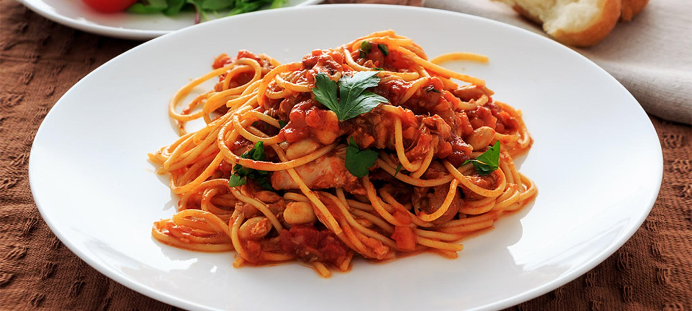

Fideos con salsa

Asi te va a quedar el platito, una delicia!
Ingredientes:
Fideos tipo larguitos
Una cucharadita de manteca
Un poco de aceite
Dos tomates
un poco de pimienta
Un laurel
Los pasos a seguir:
- Cortar los tomates en cubos pequenos
- Volcar dos tazas de agua en una olla pequena
- Hacer hervir e ir revolviendo
- Agregar un laurel en el transcurso
- Paralelamente, hervir agua para poner los fideos
- Agregar un poco de aceite y una pequena cucharadita de manteca al agua
- Agregar los fideos
- Cuando los fideos floten, listo, a manyarlos!
Nota: tanto la salsa como los fideos conviene hacerlos en paralelo, para que esten listos a la vez y no terminar
enfriando el preparado que salio antes, con el tiempo vas a aprender a tomar el tiempo de cada preparado